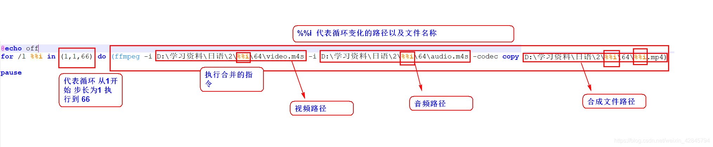

关于哔哩哔哩视频，音频合并（使用ffmpeg批量处理）
准备材料ffmpeg 软件包一个 B站视频材料包
首先官网下载ffmpeg 网址就不给了，直接搜，官网下载
然后是B站的视频资源，目前的格式是视频与音频分开的m4s文件
操作步骤
下载完毕ffmeg文件压缩包以后，解压，将文件包中的bin目录路径添加至环境变量
添加完毕以后点击确定。
接下来在桌面新建一个txt文件，在里面输入
`@echo off
for /l %%i in (1,1,66) do (ffmpeg -i D:\学习资料\日语\2%%i\64\video.m4s -i D:\学习资料\日语\2%%i\64\audio.m4s -codec copy D:\学习资料\日语\2%%i\64%%i.mp4)
pause`
然后更改文件后缀，改为 .bat

- 注意文件路径最好还是不要包含中文，我这里是更改过字符编码的，直接将txt文件改为bat文件的话，里面的中文很容易出现乱码问题
附网盘文件：
链接：https://pan.baidu.com/s/1ZpsdIxUkDUfoMNE4zY5wIg
提取码：m7da
输入好文件输入输出路径，直接双击执行bat文件，即可批量快速合成视频音频。
教程参考：https://blog.csdn.net/qq_39752726/article/details/104263381
多谢大佬